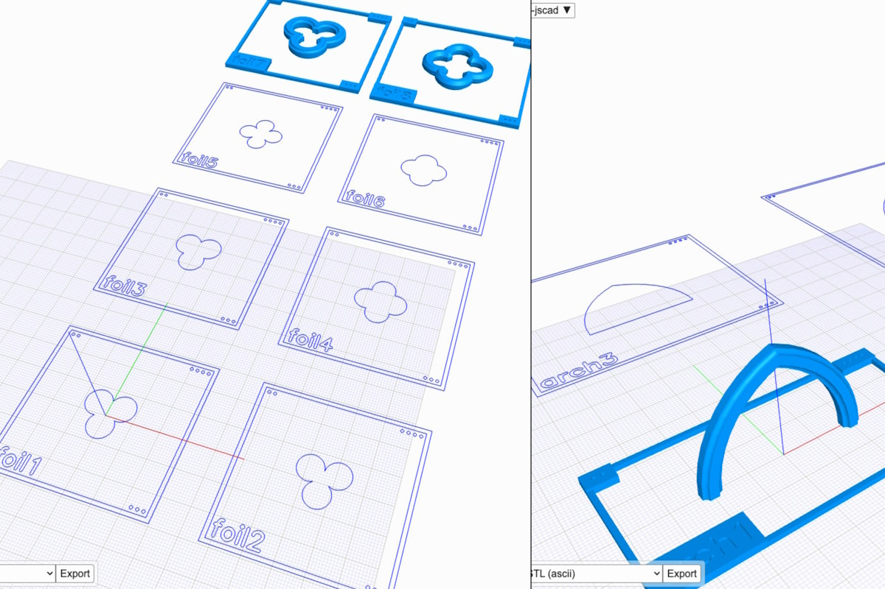
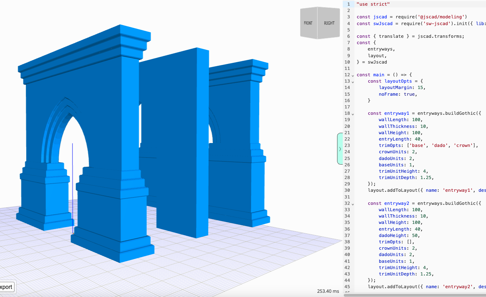
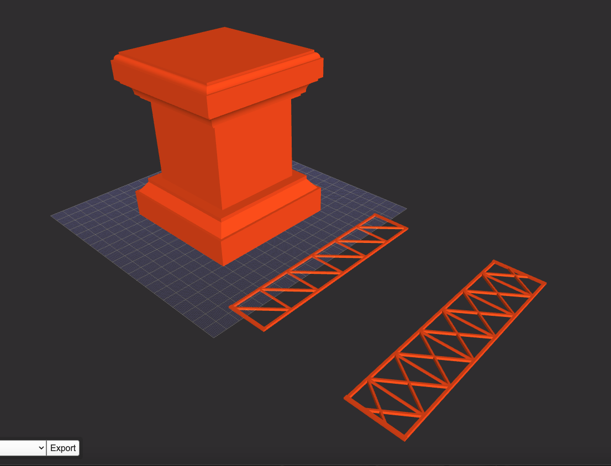
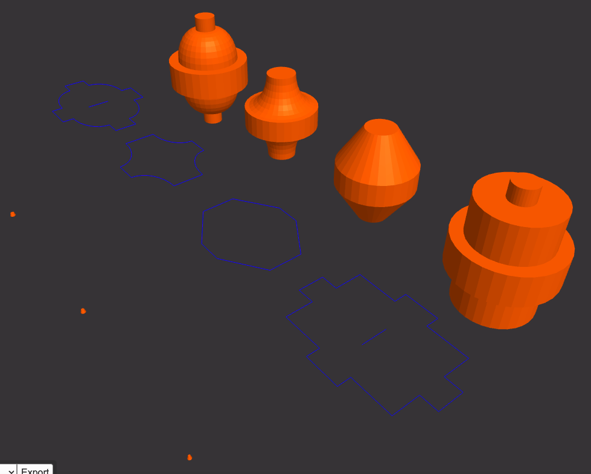
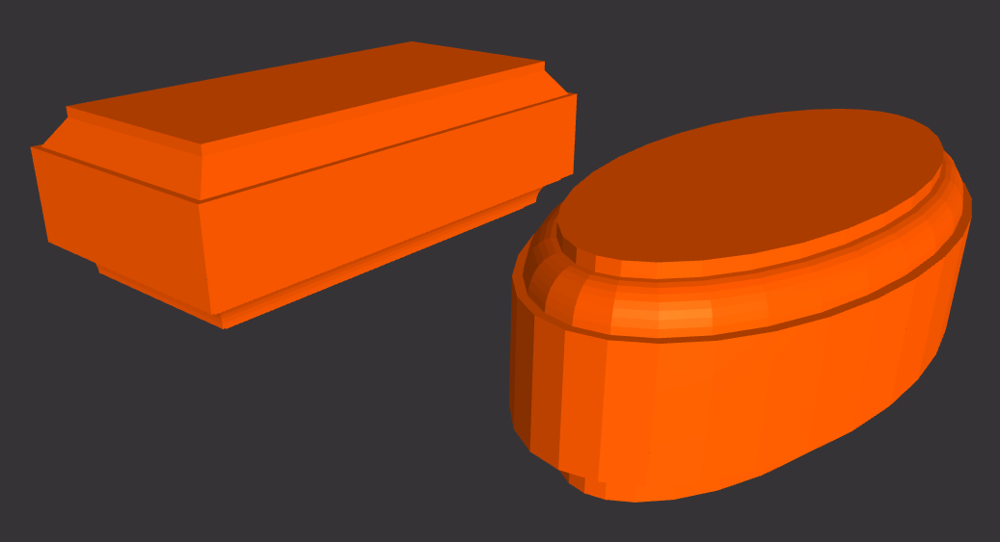
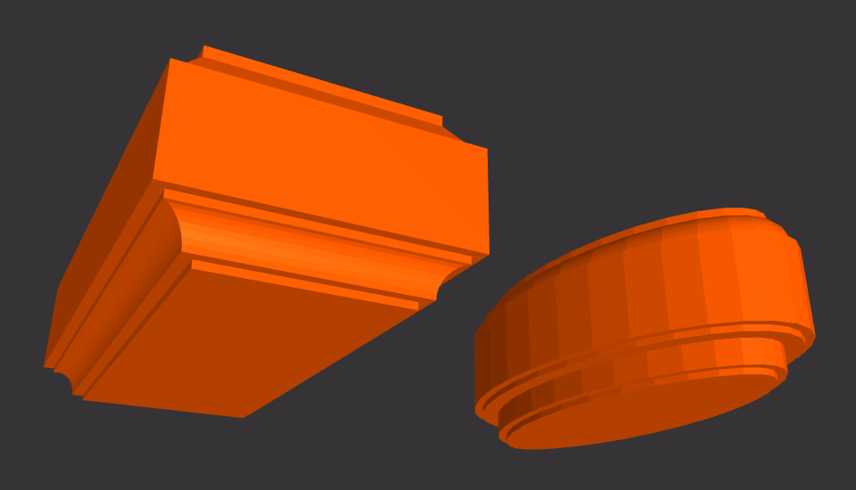
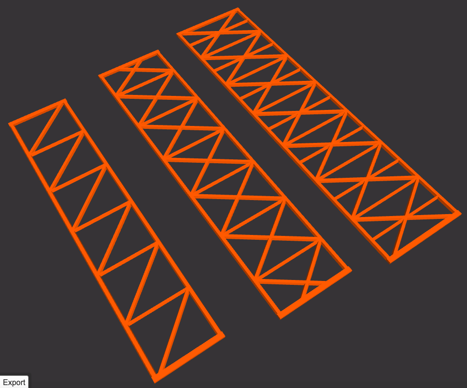

swcad-js
Salvador Workshop's CAD coding tools (in JavaScript)

Overview
Online viewer
A heavily customized version of the JSCAD UI (https://github.com/hrgdavor/jscadui)
API Docs
salvador-workshop.github.io/swcad-js/
Repository
github.com/salvador-workshop/swcad-js/
NPM package

Usage
Works with JSCAD, however you consume it.
Try copying the example below into sw-jscad-viewer (sw-jscad-viewer.netlify.app).
"use strict"
/* ----------------------------------------
* Initialization
* ------------------------------------- */
const jscad = require('@jscad/modeling')
const { cuboid } = jscad.primitives
const { translate } = jscad.transforms
const swcadJs = require('swcad-js').init({ jscad });
console.log('swcadJs', swcadJs)
const {
math,
transform,
} = swcadJs.calcs
const {
colors,
} = swcadJs.utils
const {
openWebJoist,
} = swcadJs.components
const {
routedCuboid,
} = swcadJs.components.routedShapes
//==============================================================================
/* ----------------------------------------
* Model / Scene Prep
* ------------------------------------- */
// "INTRO" PLINTH
const introPlinthSize = [
math.inchesToMm(4),
math.inchesToMm(4),
math.inchesToMm(5),
]
const endBlockSize = [
introPlinthSize[0],
introPlinthSize[1],
introPlinthSize[2] / 4,
]
const midBlockOverhang = math.inchesToMm(5 / 8)
const midBlockSize = [
introPlinthSize[0] - (midBlockOverhang * 2),
introPlinthSize[1] - (midBlockOverhang * 2),
introPlinthSize[2] / 2,
]
// Midsection is built with jscad
// Top and Bottom ends are built with swcad-js
const mid = cuboid({ size: midBlockSize })
const baseOpts = {
size: endBlockSize,
topBit: 'chamfer',
topBitOpts: {
radius1: 6,
radius2: 8,
offset1: 3,
offset2: 2,
offset3: 3,
offset4: 2,
},
bottomBit: 'none',
bottomBitOpts: {
radius1: 6,
radius2: 8,
offset1: 3,
offset2: 2,
offset3: 3,
offset4: 2,
},
}
const baseData = routedCuboid(baseOpts)
const base = baseData[0]
const topOpts = {
size: endBlockSize,
topBit: 'roundOver',
topBitOpts: {
radius1: 3,
radius2: 4,
offset1: 1.5,
offset2: 1.5,
},
bottomBit: 'cove',
bottomBitOpts: {
radius1: 6,
radius2: 8,
offset1: 2.5,
offset2: 2.5,
offset3: 2.5,
offset4: 2.5,
},
}
const topData = routedCuboid(topOpts)
const top = topData[0]
// The library also has helper functions
const introPlinth = transform.stack({}, [base, mid, top])
// OPEN WEB JOIST
const openWebJoistOpts1 = {
length: math.inchesToMm(6),
width: math.inchesToMm(1.25),
}
const openWebJoistOpts2 = {
length: math.inchesToMm(6.5),
width: math.inchesToMm(1.5),
reinforcementLevel: 2
}
const openWebJoistData1 = openWebJoist(openWebJoistOpts1)
const openWebJoistData2 = openWebJoist(openWebJoistOpts2)
const openWebJoistModel1 = openWebJoistData1[0]
const openWebJoistModel2 = openWebJoistData2[0]
//==============================================================================
/* ----------------------------------------
* Main function for JSCAD
* ------------------------------------- */
function main() {
const spaceUnit = math.inchesToMm(4)
return [
translate([spaceUnit * 0, spaceUnit * 0, spaceUnit * 0], introPlinth),
translate([spaceUnit * 1, spaceUnit * 0, spaceUnit * 0], openWebJoistModel1),
translate([spaceUnit * 2, spaceUnit * 0, spaceUnit * 0], openWebJoistModel2),
]
}
module.exports = { main }

API
The swcad-js library's main functional divisions:
Data — Static info
- Constants
- Specifications
- Standards
Calcs — Calculations of all sorts
- Math
- Geometry
- Position
- Transform
Profiles — 2D profiles, surfaces, sections
- Curve
- BeadsBits
- Edge
- Text
- Trim
STRUCTURE — More complex profiles
- Arch
- Foil
- Mesh
SHAPES — Basic shapes, and profiles built around them
- Triangle
- Circle
- Ellipse
- Square
- Rectangle
- Frame
- Hexagon
- Octagon

ProfileSpec — 2D profiles conforming to specs
- Lumber
- Paper
Components — Basic reusable 3D units
- BeadsBits
- DowelFittings
- OpenWebJoist
- Mesh
- Moulding
- Text


ComponentSpec — 3D components conforming to specs
- Tile
- Brick
- Crafts
Models — Complex 3D models
- Arch
- Buttress
- Foil
- Column
- Roof
- Wall
- Entryway
Utils — Auxiliary utilities
- Colors
- Layout
Structure

Internally, the library is split into several packages that follow the main API divisions:
swcad-js-calcs — Calculations of all sorts
swcad-js-component-spec — 3D components conforming to specs
swcad-js-components — Basic reusable 3D units
swcad-js-core — Integrates all these packages together into the final package
swcad-js-data — Static info
swcad-js-models — Complex 3D models
swcad-js-profile-spec — 2D profiles conforming to specs
swcad-js-profiles — 2D profiles, surfaces, sections
swcad-js-utils — Auxiliary utilities